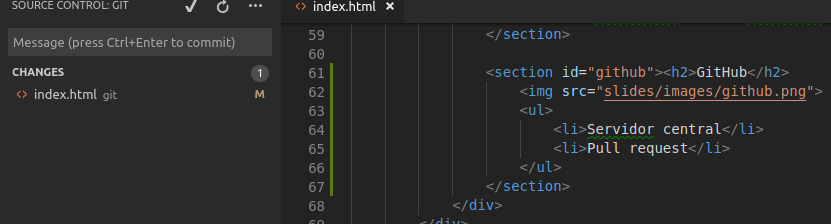

GIT

Control de versions
Nom
“I'm an egotistical bastard, and I name all my projects after myself. First 'Linux', now 'git'”
Linus Trovalds
“Git: 'unpleasant person' in British English slang”
Control de versions distribuït
Local/Remot

Línia comandes
Branques/etiquetes

Integració IDE

Integració IDE
.gitignore
GitHub

- Servidor central
- Pull request
Pull request